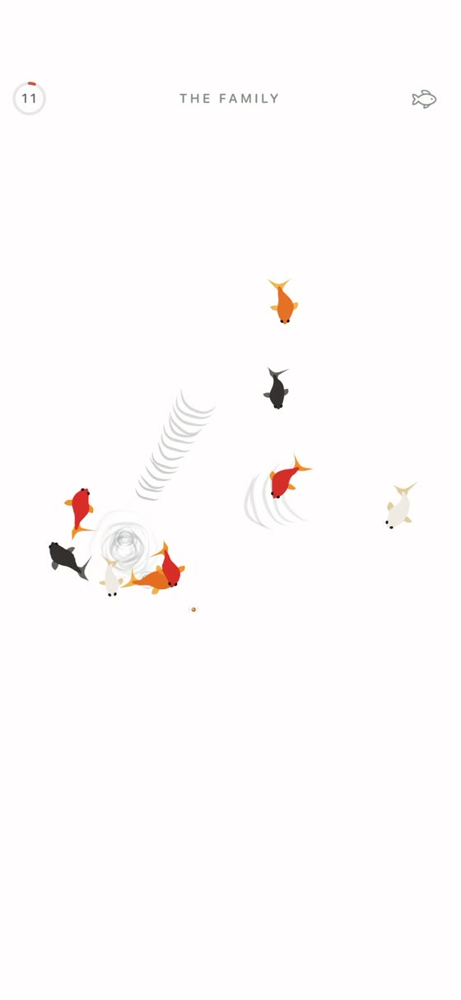

Five fish, or nine
They are not collectibles. They are the fish who already live in your pond. Add a few more if it feels quiet.
Five little fish live here. Feed them when you pass by, watch them squabble over lunch, and leave when you are ready.
See how it works
Tap the water for a small sprinkle, or drag your finger for a trail of pellets. The fish each have their own way of arriving, hesitating, and eating.
They are not collectibles. They are the fish who already live in your pond. Add a few more if it feels quiet.
The water follows the light outside. The fish grow the more you feed them, and learn that you are familiar.
Food lands with small notes instead of a fanfare. It should feel like water, not a slot machine.
The fish change a little over time, but they never turn your absence into a problem.